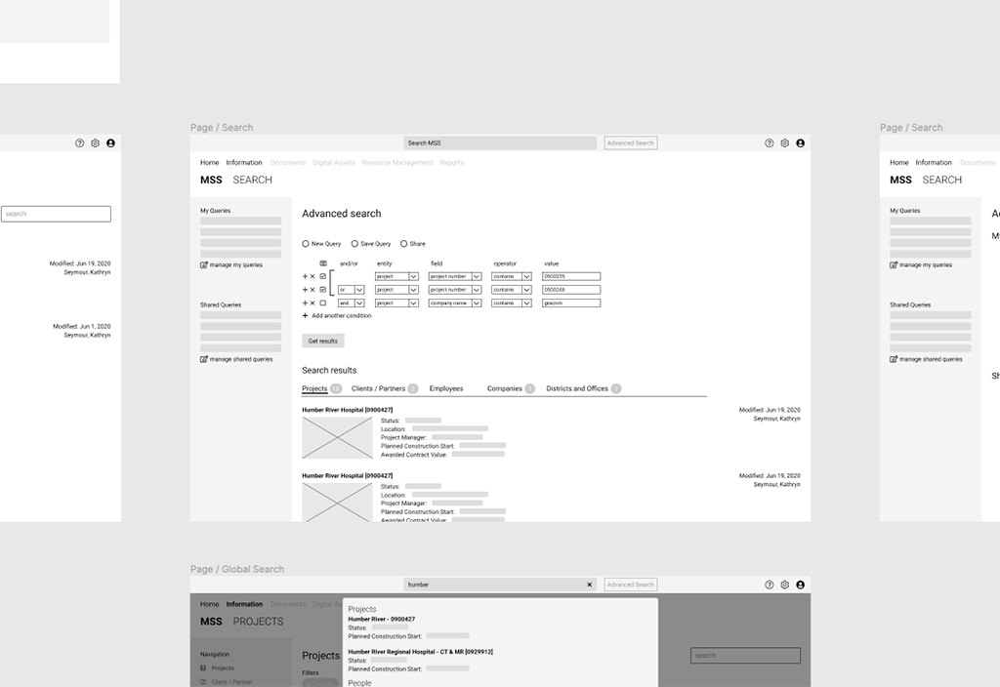
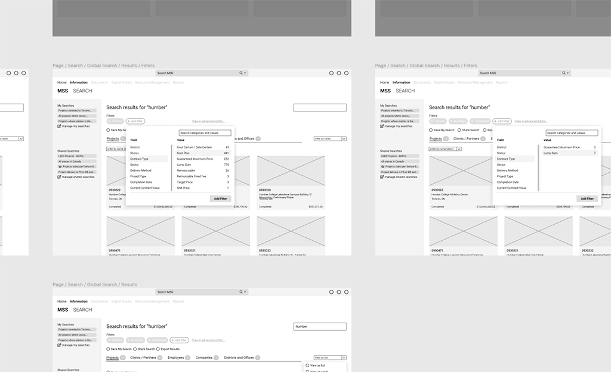
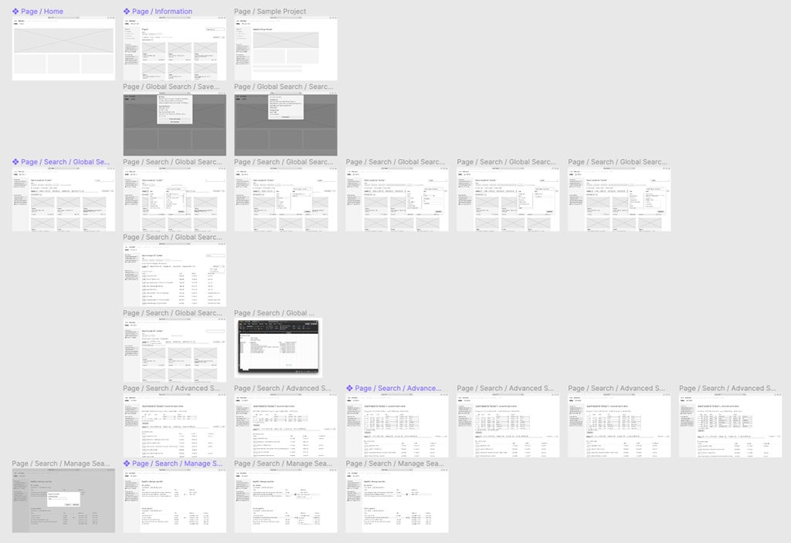

Sales and MarCom Intelligence
This project started in May 2020 and initial release is slated for June 2022. Sales and MarCom Intelligence (SAMI) is a significant enterprise application with an intent to merge in features from several other disparate systems into one umbrella application. My role on this project is both a UX Researcher and UI Designer.
I’m working with a core team of six people as well as a handful of contractors hired to develop the code; my roles include research, visual design, and interaction design. I also worked with PCL’s Communications department to ensure the final product complied with their corporate standards for branding.
The Challenge
PCL is a general contracting company that conducts more than $9 billion worth of work annually, has over 1000 projects under its belt, and has operations in North America as well as Australia. [Go to pcl.com] This has provided PCL the ability to bid on projects in many different sectors, with a vast catalogue of work experience to glean from.
“Project proposals are an essential part of a bid package and, if the data is inaccurate or incomplete, it puts millions of dollars of work at stake.”
PCL has a large marketing department that’s focused on helping the company win projects by, in part, developing best-in-class proposals that illustrate the expertise PCL brings to the table as well as showcasing the work they do. Project proposals are an essential part of a bid package and, if the data is inaccurate or incomplete, it puts millions of dollars of work at stake.
Relevant project history can be gleened from many different districts and sectors within the company, all of which have their own processes in place for storing and referencing that data. Gathering accurate and relevant results in a short period of time can be difficult because there are diverse sources it can be pulled from. PCL was lacking a central repository that anybody in the company could retrieve information from, this was the problem that lead to a new initiative: “Sales and MarCom Intelligence (SAMI)”.
The Approach
That’s not to say PCL didn’t already attempt to solve this problem: Deltek Vision has been used for ten plus years to retrieve relevant marketing-related data. It served its purpose for a time but its limitations became obvious as the needs of PCL’s Marketing and Communications department grew.
SAMI’s most basic intent was to be a direct replacement for Deltek Vision, so we knew we needed to start by focusing on the legacy application. It was key that we understood the processes and workflows of the legacy application; we couldn’t move forward without looking back at the workflow that has been in place for the past ten years.
“…we knew a better solution could be found but we had to get past those biases to understand the problem.”
Once we understood what was being used in-house, we looked outside at third-party applications to compare their workflows to PCL’s. This included commercial off-the-shelf (COTS) products as well as other internal enterprise applications. We also looked at PCL’s other internal applications, such as its corporate intranet, to better understand company workflow and investigate potential sources for relevant data.
Finally, we knew we needed to talk to users. One of the challenges of building a brand new system is that we have to get past the biases of what’s been in place for so long. We couldn’t simply build a carbon copy of the existing application, we knew a better solution could be found but we had to get past those biases to understand the problem and start designing an application that meets our clients’ needs.
The Discovery
After several rounds of discussions with subject matter experts (SMEs) and general users of the application, we identified three general types of users and developed personas for them:
-
The Director of marketing. This person is in charge of an entire marketing department, or potentially several marketing departments across company districts. They do gather information themselves, but only occasionally and are more likely to rely on their employees to do the research. These would be our more casual users.
-
The Senior Marketing Coordinator. This person has years of experience building proposals and a ton of understanding of PCL’s current applications and systems. The information they contain is invaluable since they have such intimate knowledge of the system. Having said that, they provide the greatest challenge because their processes are so ingrained. Working past cognitive biases can be a challenge at times.
-
The Proposal Coordinator. This person is deep into building a project proposal, but because this is commonly a lower-ranked position, they also have the least experience of the three. They know what they need to do, but may not know how to retrieve the information they’re looking for.

Once we discovered who our users are, we began to dive into understanding the problem by talking to them and asking them questions about their day-to-day processes, the process of building a project proposal, and what the pain points or frustrations are in the current system.
In those discussions, we kept hearing “search”. Search was a significant roadblock in Deltek Vision: it was too complex to use, too obfuscated to execute quickly, and too many different ways of conducting a search. The most powerful tool in Deltek Vision’s belt is a query builder to develop complex searches. We heard from our users that this query builder is powerful, and works well for power users, but has too steep a learning curve for new or less technically inclined users.
We also heard from them that time is key. Currently, they use Deltek Vision to search for data, but we also found out that they were required to query information via other sources. They would either frequent PCL’s intranet for data, or they would send mass emails to other marketing coordinators, asking if they might have the information they’re looking for. We dug a bit deeper and discovered they do this because the data in Deltek Vision may not even be accurate, either because there are so many fields to fill out, or it’s too complicated to find.

Understanding the Problem
After gathering all this feedback, and diving deeper into PCL’s existing applications, we started to see the problem unfold; users are frustrated with the complication of search and the inaccuracy of the data within Deltek Vision. We also saw the errancy of attempting to pull data from multiple sources. From this we built our problem statement:
“A marketing coordinator needs to be able to search for, and easily identify, information related to projects, people, contacts, and office information; all for the purpose of developing a project proposal. They need to trust that the information is up-to-date, accurate, and relevant.”
Requirements
Things started to come together now that we had context for what we needed to build.
We knew that this app needed to be web-based, that was a requirement from the beginning. Beyond that, we knew that an intuitive, yet powerful, search experience needed to be the highest priority.
We also wanted to maintain consistency between other applications. We identified that the users of this app make frequent use of the company’s intranet. That app was also undergoing its own revamp, so we reached out to the product team to gain some understanding of the design and requirements. We found out that they were using Microsoft’s Sharepoint Online platform, which more-or-less dictates that the UI follow Microsoft’s Fluent Design System. [Go to microsoft.com] We decided, for the sake of consistency, that we would adopt a UI similar to Fluent Design as well.
Vetting the Layout
Business requirements had already determined the high level content that needed to be included. Now we needed to focus on how that would be organized and presented. We started to build out our information architecture and wireframes. Then we started to walk our SMEs through these wireframes to gather their feedback and visually vet the concepts past them to make sure we understood their needs and confirmed the feedback we were receiving was accurate.
“When they saw the initial concept, they weren’t impressed. They reiterated to us that it needs to be simple to use, yet powerful.”
Our wireframes went through several iterations based on that feedback. We started by focusing on advanced search and trying to present it in a way that made sense to the user. When they saw the initial concept, they weren’t impressed. They reiterated to us that it needs to be simple to use, yet powerful.
We went back to the drawing board by studying search paradigms from a variety of sources: PCL’s intranet, third party applications, even public facing websites such as Behance and Google. What we landed on was a search that used a tag-based approached to filter down results based on relevant criteria.
The user could start by providing a search term and the application will return a set number of results. The user can then further narrow those results down by adding filters (or tags) to the query. They can limit the results by sector, location, project value, etc. This will allow them to build complex searches in a visually non-complex way.
So a search that starts out as:
- Projects in Toronto
Can become:
- Projects in Toronto
- Over $10 million
- That include commercial and residential
- And floors greater than 20
This will narrow down the results to a point that data being returned is relevant enough to be used in marketing materials with specific intents, such as project proposals.
We also identified that search needed to be available from anywhere within the application. Deltek Vision provided numerous ways to search but only one was available globally and the results were pretty basic. Any deeper dive required going to another screen or clicking on a second button before any search could be performed.
We knew that search needed to be universally accessible, simple to use, yet flexible enough to allow for complex search criteria
A Showcase of the Brand
Sales and MarCom Intelligence was created to not only provide a replacement for Deltek Vision, it also exists to showcase PCL’s brand. As a resource it allows users to search for data and assets; as a reference it showcases the brand and provides guidelines for its proper use. This project, more than any other inside PCL, needs to an ambassador of the brand and PCL’s image.
PCL’s Brand Guidelines vs Fluent Design
In 2020, PCL rolled out an extensive update to its brand guideline. This dictates the usage of PCL’s logo, as well as the “chevron motif” that is consistent across banners, documents, websites, etc. As a showcase for the brand and the new home for the brand guidelines, SAMI needed to reflect the same design language as specified in the guidelines. At the same time, SAMI is based, at its core, on Microsoft’s Fluent Design System, so there was an interesting challenge to both reflect the brand and maintain consistency with Fluent Design.
“…there was an interesting challenge to both reflect the brand and maintain consistency with Fluent Design”
The decision was made to use Fluent Design for navigation and content, but any landing pages or portfolio pages would be used to showcase PCL’s brand. In addition, minor implementation of PCL’s brand would be used in places such as page headers or dashboards.
In the example below, the chevron motif is used alongside a page header using PCL’s primary font family: Barlow Condensed. This is a (small) example of how PCL’s brand and the guidelines are being followed.
However, in this image, PCL’s brand coexists with Microsoft’s Fluent Design. Navigation, body, and controls conform to Fluent Design, whilst Headlines use PCL’s Barlow Condensed font.
The marriage of a design language that contradicted brand guidelines proved to be challenging, yet necessary. PCL doesn’t define a design system for its applications, so we knew we needed to implement something that woudn’t require us to reinvent the wheel. Fortunately, PCL has strong partnerships with Microsoft, so many of its COTS applications already use Fluent Design, making the choice to use it in SAMI easy. It maintains consistency and familiarity with workflows that users are already familiar with.
Final Words
SAMI is a significant enterprise application with some features that haven’t even been discussed here: data management, asset management, portfolio showcases, employee resumes, brand guidelines, and marketing resources. There simply isn’t enough time and space to discuss all the questions or challenges or refinments needed to get SAMI to the state it’s in today. It required significant team effort and special ability to understand the needs of our users, and design an application that meets them.